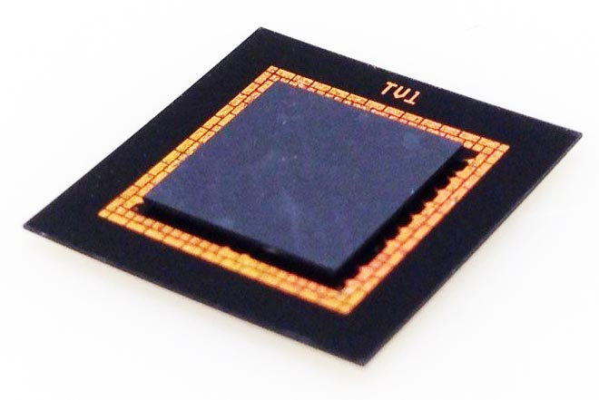

Tech Briefs
September 2015
A*STAR IME Consortium issues update on advanced packaging solutions
by Debra Vogler, Senior Technical Editor

Chai Tai Chong, Principal Research Engineer, A*STAR’s Institute of Microelectronics (IME)
A*STAR’s Institute of Microelectronics (IME) and 11 of its 12th EPRC Consortium partners across the semiconductor supply chain have developed solutions in integrated circuit (IC) packaging. Members of the consortium include Ajinomoto, EV Group, GLOBALFOUNDRIES, Heraeus Materials, Henkel, Infineon Technologies, JSR Micro N.V., Linxens, and Tokyo Ohka Kogyo. The consortium announced in August that it had achieved its objectives of developing solutions to overcome the reliability and performance issues and technical challenges in packaging solutions for compact-sized consumer electronics and high-power electronics. The solutions also improve reliability in packaging that utilizes Cu/low-k interconnects (Figure 1). A*STAR reported that the consortium reduced the high thermo-mechanical stress that is generated in the assembly of IC packaging that adopts Cu pillars and low-k chips. The demonstration used thermal compression bonding for a large size chip (18x18mm chip) and package (25x25mm FCBGA package).
Smaller form factor for 3D fan-out PoP technology
One of the solutions tackled by the consortium was enabling a smaller form factor in 3D fan-out package-on-package (3D PoP) technology (Figure 2). The objective was achieved by removing the substrate on the printed circuit board (PCB) that carries the passive components supporting electrical performance, and embedding these components within the package. The solution uses a redistribution layer (RDL) process flow and a through-mold via (TMV) technology that reduces the package profile by approximately 25%, and also reduces the manufacturing cost by approximately 15%.
Figure 1: : TCB assembled 30µm-pitch Cu pillar interconnects. SOURCE: A*STAR IME

Figure 2: :25% reduction in the package profile for 3D fan-out PoP. SOURCE: A*STAR IME
Chip Scale Review asked Chai Tai Chong, Principal Research Engineer at A*STAR IME, to discuss the top two or three technology challenges that had to be overcome to develop the dual-side RDL on mold wafer and polymer filling on TMV for the FO PoP solution. “The first challenge was to develop photo-sensitive polymer filling materials,” Chong told CSR. “This is the first demonstration of a photo-sensitive polymer filling material development in the industry. This material and process is able to form the dielectric polymer for backside RDL, as well as filling the via using polymer material.” Chong also explained that the solution had to have a process that supports polymer filling without an internal via and the backside polymer thickness control.
The second technical challenge that had to be addressed is the temporary bond/debond (TBDB) process development for thin mold wafer handling. “The conventional TBDB process is for Si wafer handling, which has less warpage than a mold wafer,” said Chong. “A higher mold wafer’s warpage makes the TBDB process difficult, especially if the mold wafer peels off from the carrier due to high warpage during the RDL process.” After reviewing test results, noted Chong, as well as a couple of iterations of short loop evaluation, the project team and consortium members – particularly the materials and equipment companies – successfully formulated materials and equipment parameters that could support the developments of both photo-sensitive polymer filling materials and TBDB process development for thin mold wafer handling.
Developing a Zn-based high-temp soldering process
CSR asked Chong to explain the background behind the consortium’s development of a Zn-based high-temperature soldering process and material optimization needed to address high-power switching device packaging (i.e., in the range 170-245ºC). “Zn-based solders have been proposed as a replacement for Pb-based high-temperature solders (e.g., Pb-5Sn) because their thermal conductivity is twice as high and the coefficient of linear expansion is lower than for Pb-based solders,” Chong told CSR. “It is also more cost-effective, however, Zn-based solders are widely known for their hardness, which is one order of magnitude greater than that of Pb-based solders.” Zn-based solders also have a wettability of 290-320°C, he pointed out, which makes them inferior to the Pb-based solders. “Therefore, material optimization for Zn-based solders is required to improve their properties, such as hardness, wettability, electrical resistivity, and density in a solid by incorporating Al, Mg, Ga, Sn, Cu or In.”
The consortium’s members were able to formulate the material and process parameters, and the team was able to meet target reliability for wide band gap device application. “The microstructure of Zn-based solder varies depending on doping contents of the elements,” Chong told CSR. The researchers evaluated various soldering options with different surface finishes (e.g., Cu, Ag, Ni and Au) on the substrate of the package and solder alloy (addition of Al, Mg and Ga) with power device makers and material providers. “Finally, the packaging was carried out to develop the material and process parameters and to meet target reliability for wide band gap device application.”
 The new Tech News section will be featuring select quotes, commentary, and data based on questions posed to industry technologists by our senior technical editor, Debra Vogler. If your company has significant technical news to announce and you’re invited to participate in these interviews, be prepared to discuss the science behind your latest breakthrough, the R&D challenges that had to be solved along the way, and the industry challenges driving the need for the technology. Send your technology news releases to editor@chipscalereview.com
The new Tech News section will be featuring select quotes, commentary, and data based on questions posed to industry technologists by our senior technical editor, Debra Vogler. If your company has significant technical news to announce and you’re invited to participate in these interviews, be prepared to discuss the science behind your latest breakthrough, the R&D challenges that had to be solved along the way, and the industry challenges driving the need for the technology. Send your technology news releases to editor@chipscalereview.com